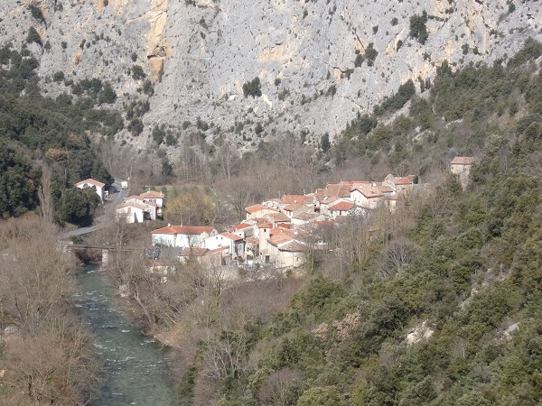

Saint Martin Lys
Complement 3

Plan du site (suite)
Annexes sur des documents trouvés aux Archives départementales de l'Aude
Installation de la première ligne de téléphone
Eclairage à Saint Martin Lys
Construction et travaux à l'ancienne mairie
Fontaines et conduites d'eau
Construction et travaux à l'école
Achats, ventes ou échanges de terrains communaux
Proces qui ont concerné la commune
Réquisitions de mules à St Martin Lys en 1939
Permis de construire de l'usine de dolomie
Grève de septembre 1895 sur le chantier du lot 1 de la voie ferrée Quillan - Rivesaltes
Réparation à l'église et au presbytère
Courriers liés à la paroisse et aux actions sociales de la fabrique
Citerne de Planèzes
Cliquer ici pour faire un Commentaire